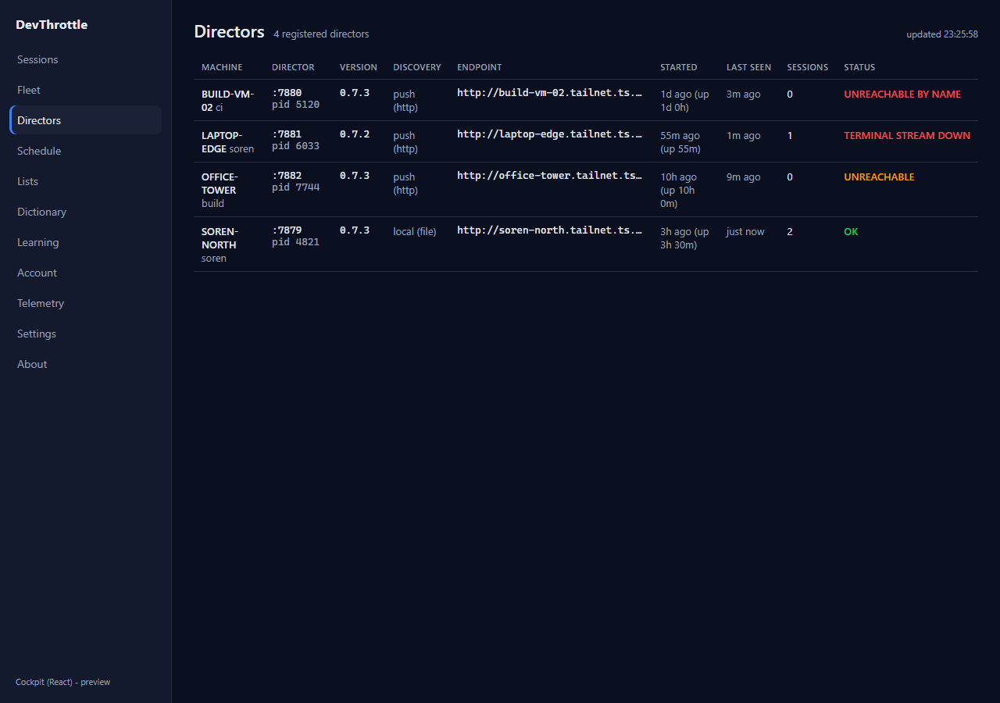
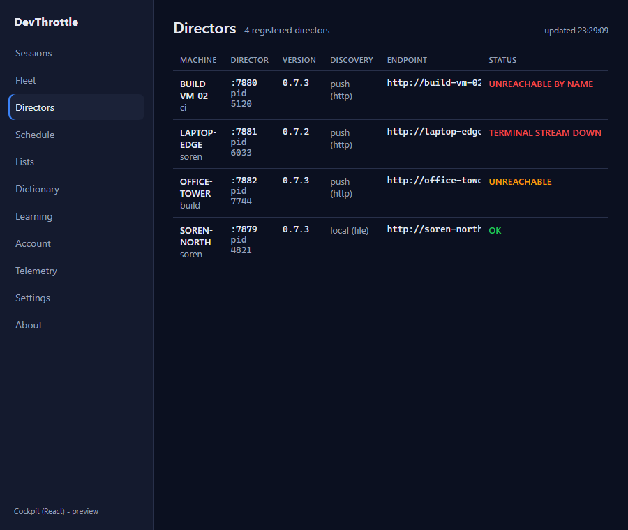
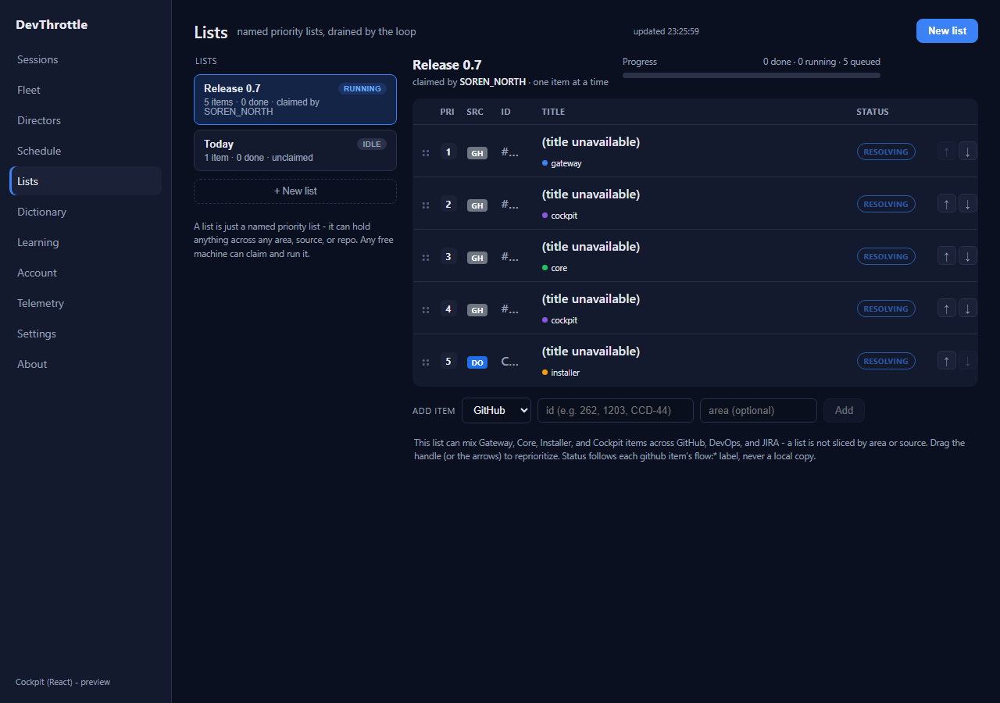
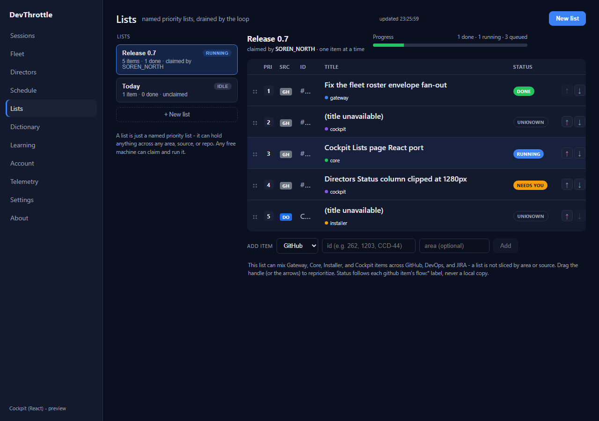
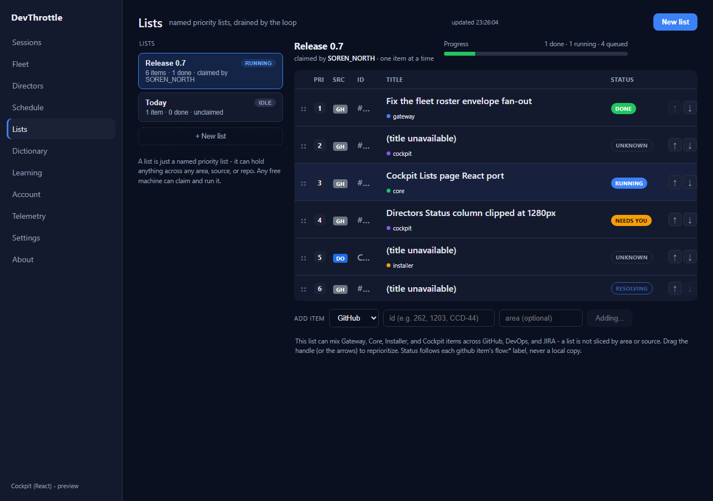
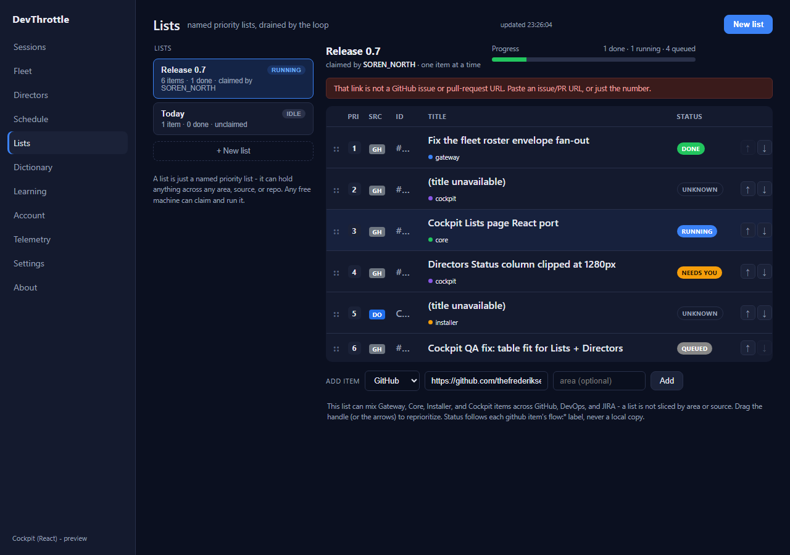

issue-1026-cockpit-table-fit - epic #967. Surface: React Cockpit (apps/cockpit)..itable now uses table-layout:fixed and the id cell (.idc) ellipsizes (with a full-value title tooltip). A long or pasted-URL id can no longer widen the Id column and push Title/Status off-screen. Column widths were trimmed so the Title column keeps room in the narrow items pane; .ittl wraps unbroken strings.position:sticky; right:0) to the right of the horizontal scroll area, so the key health signal stays on screen even when the 9-column table is wider than the pane. When the table fits (the common case on current main, whose shell dropped the right rail) sticky has no visual effect.#262 / 262) is parsed to its number before append; a link that is not a GitHub issue/PR URL is rejected inline instead of being stored verbatim as a permanently-unresolvable id.resolving status (accent-outline badge, gentle pulse) replaces the misleading unknown sentinel. Items resolve in parallel with per-item incremental setInfo (rows populate one at a time), and a 30s TTL cache stops the 10s poll re-resolving every item on every tick.| Criterion | Result | Evidence |
|---|---|---|
| Adding a long/URL id keeps Title and Status visible for all rows | PASS | Automated: Status cell right edge within the items pane for all 5 rows (incl. the pasted-URL row). Visual: Fig 3-4. |
| A pasted GitHub URL resolves to the right issue (or is clearly rejected) | PASS | Pasted PR URL .../pull/1026 stored as id="1026" (row 6 resolves to its title); a bare repo link is rejected inline. Fig 5-6. |
| Directors Status column visible at 1280px without horizontal scroll | PASS | Status header right edge = 1252px (viewport 1280) -> visible; no overflow. Fig 1. Sticky pins it even when the table overflows at narrow widths. Fig 2. |
| Resolving rows show a distinct state and populate incrementally | PASS | 5 RESOLVING badges at load, then 0 after resolve as rows fill in one at a time. Fig 3 (resolving) -> Fig 4 (resolved). |
| Full build gate clean | PASS | cockpit npm run build (tsc+vite) OK; root npm run lint (eslint) OK; Gateway dotnet build -p:RunCockpitBuild=true 0 errors; dotnet build cc-director.sln 0 errors. |






No architecture or security drift. This is a Cockpit front-end fix (CSS layout, client-side id parsing, and client-side status-resolution scheduling). No container boundary, endpoint, or security control changed; the Cockpit remains a same-origin client of the Gateway and holds no GitHub token. No docs/cencon/ update required.